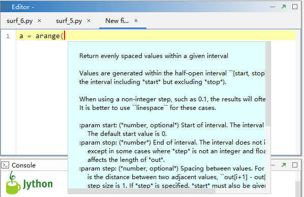
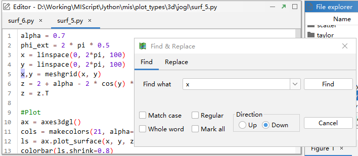
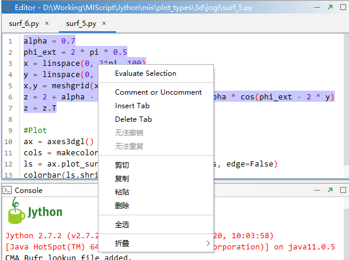
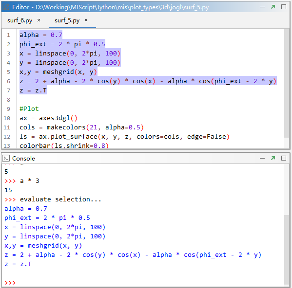

代码编辑¶
Editor是编辑Jython脚本程序的区域，可以通过点击“File -> New”菜单或者工具栏中的“New File”按钮在Editor中创建一个 新文件，然后在代码编辑区域编写代码，File菜单和工具栏中有保存文件（Save File）和另存文件（Save As）的菜单和按钮将编 写的代码保存到文件中，和Python一样，Jython程序文件的后缀也是.py。工具栏中有打开文件（Open File）按钮来打开已有的 Jython程序文件，或者在File explorer中双击Jython文件名在Editor中打开代码文件。
Editor中有代码高亮和代码提示功能，可以用剪切（Cut）、复制（Copy）、粘贴（Paste）来编辑代码。
点击“Edit -> Find & Replace”菜单打开查找和替换对话框，可以对代码中进行查找和替换操作。
Edit菜单中的切换注释（Toggle Comment）菜单可以对选中代码行进行代码注释和取消注释的操作；Insert Tab (4 spaces) 菜单和Delete Tab (4 spaces)菜单可以对选中代码行前统一插入4个空格和删除4个空格。Jython语法中很重要的是代码缩进， 建议用4个空格来进行缩进。在Editor中选中部分代码点击鼠标右键，在弹出的右键菜单中也有上述相应的功能。
点击工具栏中“Run Script”按钮可以运行Editor中当前Jython文件的代码，在Console中会输出>>> run script…，代码中 打印（print）语句也会在Console中输出。在Editor中选中部分代码，点击鼠标右键，在弹出菜单中第一个是Evaluate Selection 菜单，点击该菜单可以运行被选中的代码行，此功能在调试代码的过程中很有用。
点击Evaluate Selection菜单后在Console中会输入>>> evaluate selection…字样和被选中的代码（蓝色显示）。
